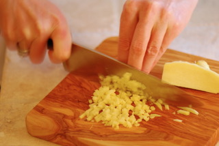
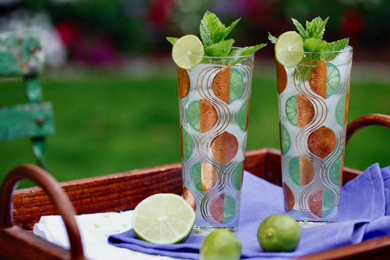
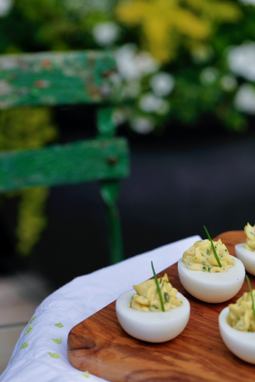
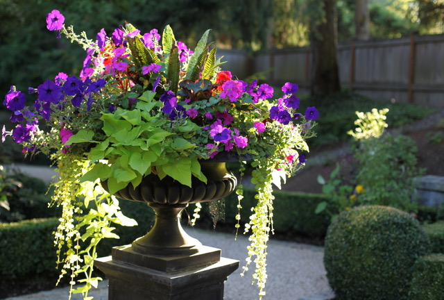

Cocktails & Appetizers
Easy instructions and tips for making the perfect cocktails and appetizers.
Lesson 01: How to Mince Ginger"
Cutting ginger is easy if you know the trick.
How to Make a Vodka Ginger Limeade Cocktail
There's nothing more refreshing on a hot summer day than a Vodka Ginger Limeade.
>How to Make Lemony Deviled Eggs with Fresh Herbs
Deviled eggs are the perfect summer appetizer.
>Garden Inspiration
Gardens are the perfect backdrop for entertaining and relaxing.
Container Gardening 101
Container gardening is the easiest way to develop a green thumb.
